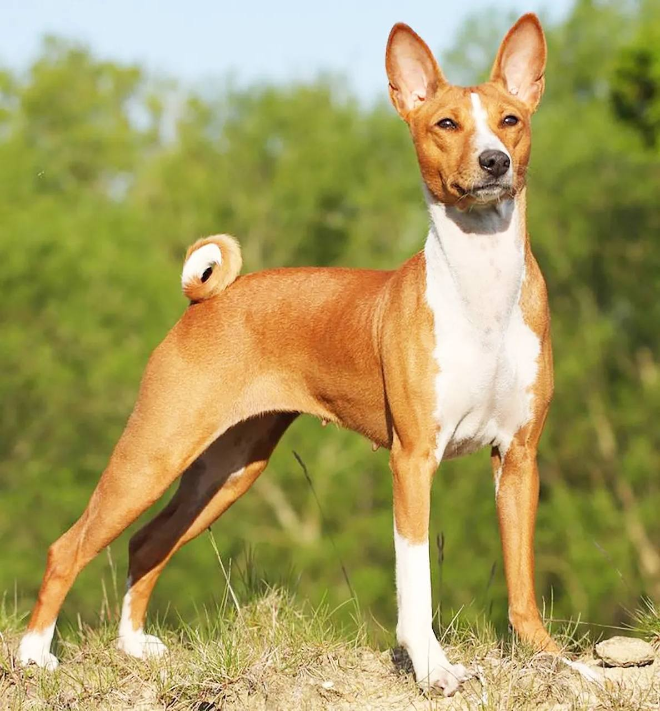

Басенджи

Происхождение: Центральная Африка
Размер: Средние (рост: 40–43 см, вес: 9–12 кг)
Характер: Умные, независимые, энергичные
Особенности: Не лают, издают звуки, похожие на урчание. Очень чистоплотные (умываются, как кошки). Склонны к побегам, нужен контроль на прогулках
Здоровье: Возможны болезни почек, глаз